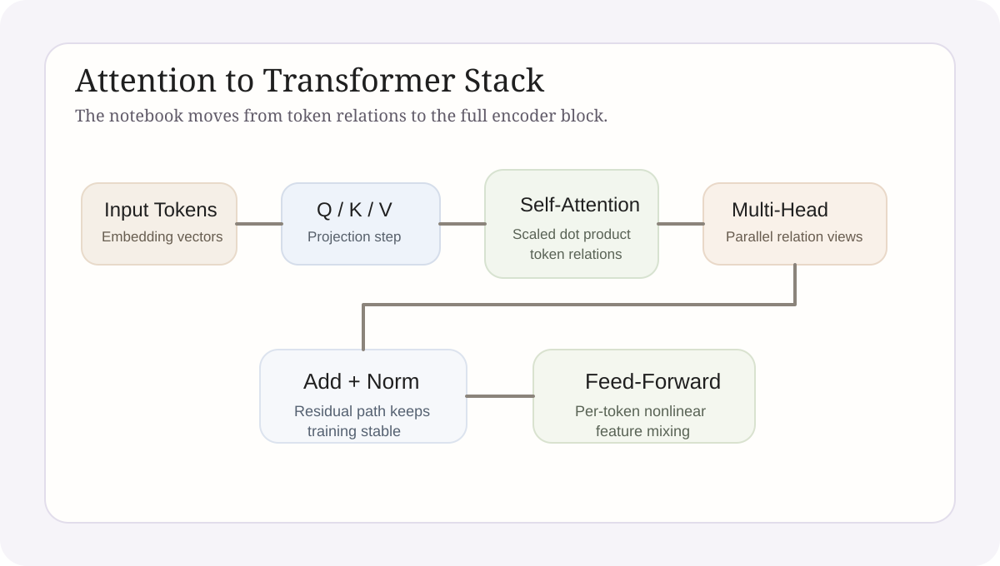

Attention Mechanism Learning Notes
This article reorganizes self-attention, multi-head attention, positional encoding, and Transformer blocks into one coherent learning thread, then places the notebook implementation back inside that method logic.
Technical Explainer
The object of this note set is the attention mechanism as a structured method, not as a pile of isolated formulas. The main task is to understand why sequence modeling moved from stepwise state passing to direct token-relation modeling, and how Transformer blocks make that idea trainable at scale.
1. Theme
This article focuses on how attention rewrites sequence modeling. Earlier recurrent approaches passed hidden state step by step through time. Attention allows the model to score token-to-token relevance directly. That shift removes the strict dependence on one temporal chain and provides a uniform interface for later large-model architectures.
The learning target is therefore not formula memorization. It is the explanation of three linked questions: what the model compares, why scaling and normalization are necessary, and why multi-head attention plus positional encoding can be stacked into a stable deep structure.

2. Principle
The core action of self-attention is straightforward. Each token produces a query, key, and value. Query-key matches define which values should matter. The scaling factor keeps score magnitude under control, and softmax converts relative importance into a weight distribution. In one step, the model learns who should attend to whom.
Multi-head attention is not only repeated attention. It gives different heads different projection subspaces so multiple relation patterns can be learned in parallel. Positional encoding, residual connections, and normalization then restore order information, stabilize optimization, and make the architecture stackable rather than shallow.
Relation Modeling
Attention replaces strictly sequential passing with explicit relevance scoring between tokens.
Parallel Heads
Different heads can specialize in different relation patterns instead of forcing one path to carry everything.
Stable Stacking
Positional encoding, residual paths, and normalization let the mechanism scale into deep Transformer blocks.
3. Practice and Implementation
The notebook exercises are organized around three levels. The first level is numerically stable softmax and matrix-based attention computation. The second level extends single-head attention into multi-head form and clarifies reshape and concatenation across tensor dimensions. The third level puts attention back into the broader Transformer view together with feed-forward layers, residual paths, and normalization.
This practice matters because it forces the theory to survive code-level detail. If tensor dimensions, weight normalization, or residual flow are misunderstood, the implementation exposes the gap immediately. The notebook is therefore both a reading aid and a correctness check on conceptual understanding.
Numerical Stability
The softmax implementation makes clear why attention scores cannot be left as raw unconstrained values.
Shape Discipline
The move from one head to many heads is mostly a projection-and-reshape problem, and code makes that concrete.
Block Reassembly
Reassembling attention into a full Transformer block is the step from formula literacy to architectural understanding.
4. Current Output
The direct outcome of this study is that attention can now be understood as one structured object instead of a set of disconnected terms. Token relations, weight distributions, multi-head parallelism, positional encoding, and residual flow can all be checked against the same notebook implementation.
This foundation also matters for later topics. Embeddings, context windows, retrieval augmentation, and agent memory all depend on the broader question of how representations are reorganized inside context. Attention is the starting point of that line of reasoning.
5. Conclusion
The importance of attention is not that it swaps one formula for another. It changes the object of sequence modeling. The model no longer has to move information only along time. It can directly learn the relational structure of the context. The Transformer then turns that relational method into a stackable and scalable framework.
6. Full Code Notes
Three things to look for before reading the notebook
Start with softmax
Without normalization and numerical stability, the attention weights remain opaque.
Then inspect QKV shapes
The shift from single-head to multi-head attention is fundamentally about projection and reshape logic.
End with block assembly
Putting attention back into residual, normalization, and feed-forward structure is what makes the Transformer understandable.
Code scope. The page renders the full `13_attention_is_all_you_need.ipynb` notebook so formulas, visuals, and implementation can be read together.
GitHub Repository. https://github.com/YuEugenio/Agent-Studies